Hazel 游戏引擎笔记 029：OpenGL 着色器
本节来源：The Cherno 游戏引擎系列第 29 讲“OpenGL 着色器”，时长约 42 分 46 秒。
原课程与 Hazel 代码作者：The Cherno。代码参考提交：76ae3b81。
本文由视频字幕重构、翻译并整理，不是官方教材；术语和代码以原视频及同期 Hazel 仓库为准。
本节目标
上一讲已经能在 Hazel 中画出第一个三角形，但三角形没有使用 Shader。本讲补上 GPU 渲染的核心：
- 解释什么 Shader；
- 理解顶点 Shader 与片元 Shader；
- 理解 GPU 图形管线中的数据流；
- 编译并链接 OpenGL Shader 程序；
- 创建 Hazel 的第一版
Shader类； - 处理编译和链接错误日志；
- 用 Shader 绘制红色三角形；
- 从顶点 Shader 向片元 Shader 传递位置数据；
- 观察颜色插值效果。
graph LR
A[顶点数据] --> B[Vertex Shader]
B --> C[图元装配与光栅化]
C --> D[Fragment Shader]
D --> E[像素颜色]
📷 Shader 是让 GPU 处理顶点与像素数据的程序
回到原视频 (00:06:40)
1. 开发分支的 PBR 预览
(参考时间: 00:02:35)
视频开场先展示 Hazel 开发分支中的 PBR Demo，用来说明当前公开课程正在走向什么程度。
演示包括：
- 不同粗糙度的金属与电介质球；
- 环境立方体贴图；
- HDR 曝光；
- 模型、Albedo、Normal、Metalness、Roughness 纹理加载；
- 基于环境贴图的反射。
这不是本讲实现内容，而是说明前面的窗口、事件、ImGui、数学库和构建系统为渲染开发提供了基础。
graph TD
A[窗口 / 事件 / 输入] --> E[渲染器]
B[ImGui / 编辑器接口] --> E
C[数学库 GLM] --> E
D[构建与平台抽象] --> E
E --> F[PBR / 材质 / 光照]
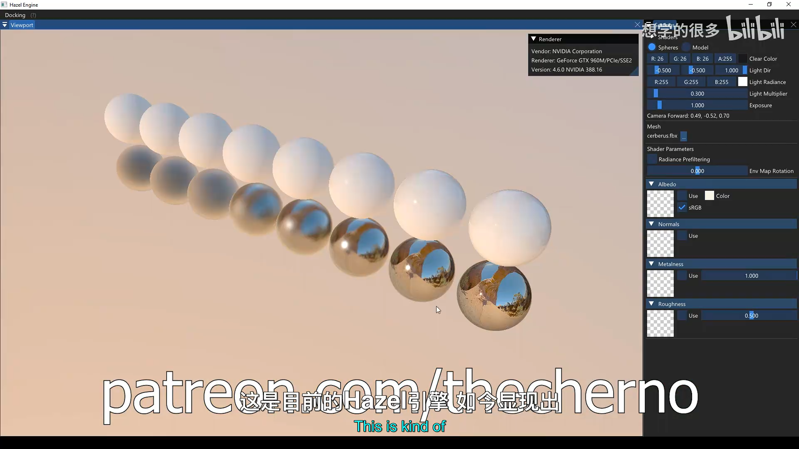
📷 Hazel 开发分支中的 PBR Demo 展示渲染方向
回到原视频 (00:02:35)
2. 什么是 Shader
(参考时间: 00:06:49)
Shader 是运行在 GPU 上的程序，用来决定 GPU 如何处理传入的数据。
两种最常见的 Shader：
| Shader | 执行次数 | 主要职责 |
|---|---|---|
| Vertex Shader | 每个顶点一次 | 计算顶点在裁剪空间中的位置 |
| Fragment / Pixel Shader | 每个片元或像素一次 | 计算该像素最终颜色 |
OpenGL 把它称为 Fragment Shader；DirectX 等 API 常称为 Pixel Shader。
对于上一讲的三角形：
3 个顶点
-> Vertex Shader 执行 3 次
-> 光栅化产生大量片段
-> Fragment Shader 为每个片段决定颜色
graph LR
A[3 个顶点] --> B[Vertex Shader x3]
B --> C[三角形光栅化]
C --> D[大量 Fragment]
D --> E[Fragment Shader]
E --> F[颜色]
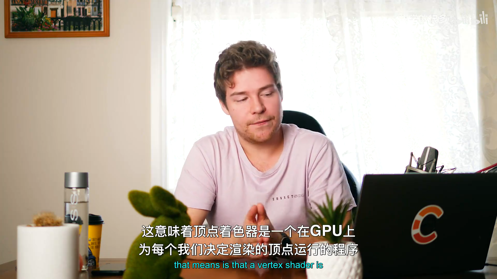
📷 Vertex Shader 每个顶点运行一次，Fragment Shader 每个像素运行一次
回到原视频 (00:08:10)
3. 图形管线中的数据流
(参考时间: 00:09:35)
顶点 Shader 的主要输出是裁剪空间位置：
gl_Position = ...;
裁剪空间坐标通常在：
x: -1 到 +1
y: -1 到 +1
z: -1 到 +1
顶点位置经过图元装配和光栅化后，被转换为覆盖三角形区域的片段。
片元 Shader 再决定每个片段的颜色：
out vec4 color;
color = vec4(1.0, 0.0, 0.0, 1.0);
flowchart TD
A[Vertex Buffer] --> B[Vertex Shader]
B --> C[Clip Space Position]
C --> D[Primitive Assembly]
D --> E[Rasterization]
E --> F[Fragment Shader]
F --> G[Framebuffer Color]
📷 顶点 Shader 决定位置，片元 Shader 决定像素颜色
回到原视频 (00:10:29)
4. Shader 编译与链接
(参考时间: 00:12:39)
GLSL 是 OpenGL Shading Language。Shader 虽然运行在 GPU，但创建过程与 CPU 程序类似：
- 创建 Shader 对象；
- 提交源码；
- 编译 Shader；
- 检查编译状态；
- 读取错误日志；
- 创建 Program；
- 附加顶点与片元 Shader；
- 链接 Program；
- 检查链接状态；
- 分离并删除临时 Shader。
flowchart TD
A[glCreateShader Vertex] --> B[glShaderSource]
B --> C[glCompileShader]
C --> D{编译成功?}
D -- 否 --> E[读取 InfoLog]
D -- 是 --> F[创建 Fragment Shader]
F --> G[编译 Fragment]
G --> H[glCreateProgram]
H --> I[Attach + Link]
I --> J{链接成功?}
J -- 否 --> K[读取 Program InfoLog]
J -- 是 --> L[Detach / Delete Shader]
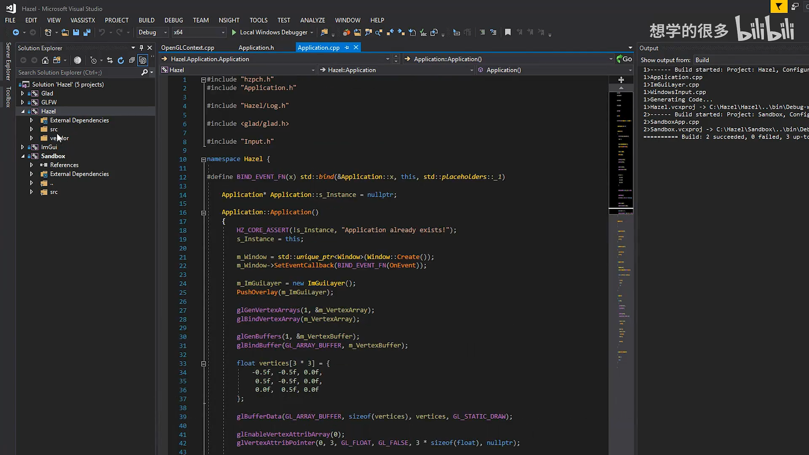
📷 Shader 需要先分别编译，再链接为 GPU Program
回到原视频 (00:14:00)
5. 编译顶点 Shader
(参考时间: 00:15:20)
创建顶点 Shader：
GLuint vertexShader =
glCreateShader(GL_VERTEX_SHADER);
const GLchar* source = vertexSrc.c_str();
glShaderSource(
vertexShader,
1,
&source,
0);
glCompileShader(vertexShader);
检查编译结果：
GLint isCompiled = 0;
glGetShaderiv(
vertexShader,
GL_COMPILE_STATUS,
&isCompiled);
如果失败：
GLint maxLength = 0;
glGetShaderiv(
vertexShader,
GL_INFO_LOG_LENGTH,
&maxLength);
std::vector<GLchar> infoLog(maxLength);
glGetShaderInfoLog(
vertexShader,
maxLength,
&maxLength,
infoLog.data());
glDeleteShader(vertexShader);
HZ_CORE_ERROR("{0}", infoLog.data());
HZ_CORE_ASSERT(
false,
"Vertex shader compilation failure!");
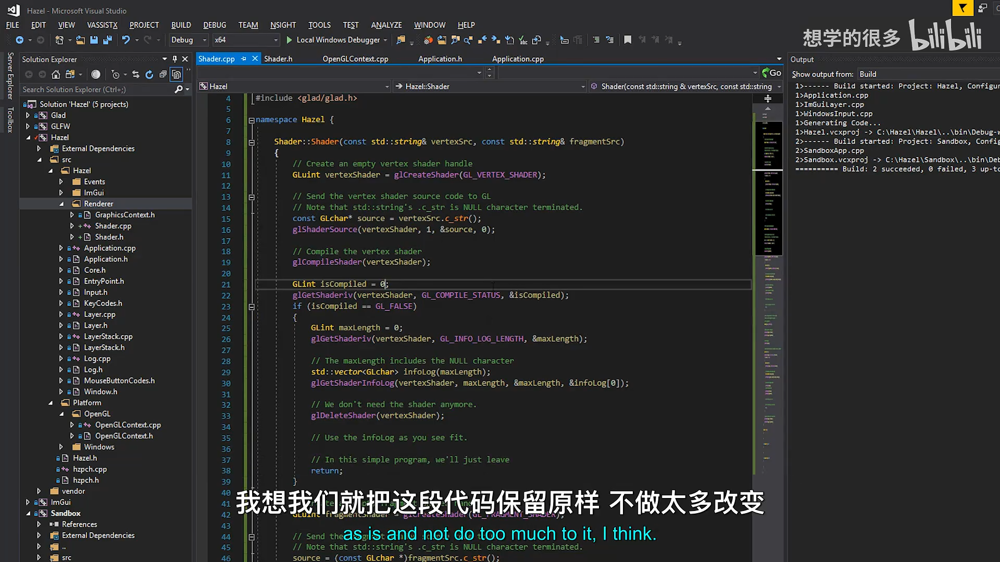
📷 顶点 Shader 编译失败时读取 InfoLog 并断言
回到原视频 (00:20:00)
6. 编译片元 Shader
片元 Shader 使用相同的编译流程，只是类型改为：
GLuint fragmentShader =
glCreateShader(GL_FRAGMENT_SHADER);
如果片元 Shader 编译失败，需要同时删除：
glDeleteShader(fragmentShader);
glDeleteShader(vertexShader);
因为顶点 Shader 已经成功创建，但整个 Shader Program 无法继续构建，必须避免资源泄漏。
flowchart TD
A[Vertex Shader] --> B{编译成功?}
B -- 否 --> C[删除 Vertex 并报错]
B -- 是 --> D[Fragment Shader]
D --> E{编译成功?}
E -- 否 --> F[删除 Fragment 与 Vertex]
E -- 是 --> G[链接 Program]
7. 链接 Shader Program
(参考时间: 00:22:20)
创建程序对象：
m_RendererID = glCreateProgram();
GLuint program = m_RendererID;
附加并链接：
glAttachShader(program, vertexShader);
glAttachShader(program, fragmentShader);
glLinkProgram(program);
检查链接状态：
GLint isLinked = 0;
glGetProgramiv(
program,
GL_LINK_STATUS,
&isLinked);
失败时：
glDeleteProgram(program);
glDeleteShader(vertexShader);
glDeleteShader(fragmentShader);
HZ_CORE_ERROR("{0}", infoLog.data());
HZ_CORE_ASSERT(
false,
"Shader link failure!");
成功时：
glDetachShader(program, vertexShader);
glDetachShader(program, fragmentShader);
链接完成后，Shader Program 已经持有编译结果，可以分离并删除独立的 Shader 对象。
sequenceDiagram
participant C as Shader class
participant GL as OpenGL
C->>GL: glCreateProgram
C->>GL: Attach vertex/fragment
C->>GL: glLinkProgram
GL-->>C: Link status
C->>GL: Detach shaders
C-->>C: keep program ID
8. Shader 类接口
(参考时间: 00:24:00)
新增：
Hazel/src/Hazel/Renderer/Shader.h
Hazel/src/Hazel/Renderer/Shader.cpp
#pragma once
#include <string>
namespace Hazel {
class Shader
{
public:
Shader(
const std::string& vertexSrc,
const std::string& fragmentSrc);
~Shader();
void Bind() const;
void Unbind() const;
private:
uint32_t m_RendererID;
};
}
m_RendererID 保存 OpenGL Shader Program 的句柄。
绑定和解除绑定：
void Shader::Bind() const
{
glUseProgram(m_RendererID);
}
void Shader::Unbind() const
{
glUseProgram(0);
}
析构时删除 Program：
Shader::~Shader()
{
glDeleteProgram(m_RendererID);
}
classDiagram
class Shader {
-uint32_t m_RendererID
+Shader(vertexSrc, fragmentSrc)
+Bind()
+Unbind()
+~Shader()
}
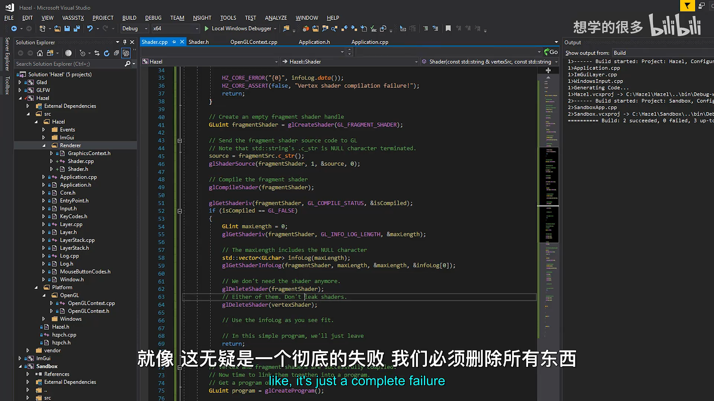
📷 Shader.h 定义构造函数、析构函数、Bind/Unbind 和 RendererID
回到原视频 (00:24:00)
9. 在 Application 中创建 Shader
(参考时间: 00:27:19)
当前还没有完整 Renderer 架构，因此先临时把 Shader 放在 Application：
#include "Hazel/Renderer/Shader.h"
std::unique_ptr<Shader> m_Shader;
创建：
m_Shader.reset(
new Shader(vertexSrc, fragmentSrc));
绘制前绑定：
m_Shader->Bind();
glBindVertexArray(m_VertexArray);
glDrawElements(
GL_TRIANGLES,
3,
GL_UNSIGNED_INT,
nullptr);
虽然 OpenGL 只要求 Shader 在 draw call 前绑定，但这里把 Bind() 放在绘制流程开头，更接近 DirectX 等 API 的显式状态要求。
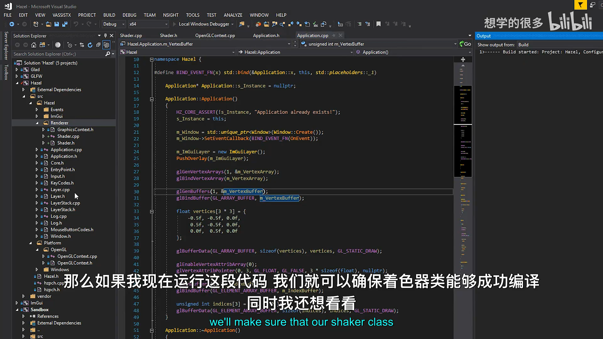
📷 Application 暂时持有 Shader 并在 Draw Call 前绑定
回到原视频 (00:27:19)
10. 使用 Raw String 编写 GLSL
(参考时间: 00:29:35)
普通 C++ 字符串需要逐行拼接和转义：
std::string src =
"#version 330 core\n"
"layout(location = 0) in vec3 a_Position;\n";
不方便直接粘贴多行 Shader。
C++11 Raw String 可以保留原始换行：
std::string vertexSrc = R"(
#version 330 core
layout(location = 0) in vec3 a_Position;
void main()
{
gl_Position = vec4(a_Position, 1.0);
}
)";
graph LR
A[普通字符串] --> B[每行引号 + \\n]
C[Raw String] --> D[保留多行与缩进]
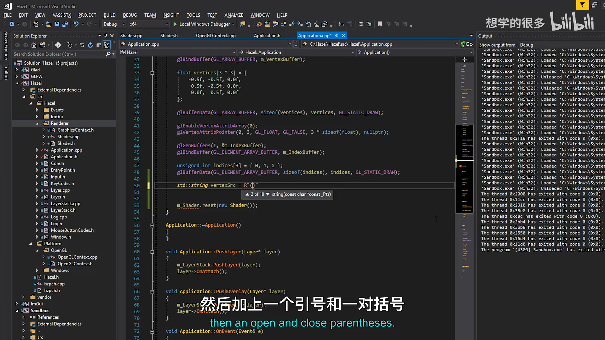
📷 Raw String 让 GLSL 可以按原始格式粘贴到 C++
回到原视频 (00:29:40)
11. 编写顶点与片元 Shader
顶点 Shader：
#version 330 core
layout(location = 0) in vec3 a_Position;
void main()
{
gl_Position = vec4(a_Position, 1.0);
}
片元 Shader：
#version 330 core
layout(location = 0) out vec4 color;
void main()
{
color = vec4(1.0, 0.0, 0.0, 1.0);
}
命名约定：
a_表示输入 Attribute；v_表示在 Shader 之间传递的 Varying 变量；gl_Position是顶点 Shader 的内建裁剪空间输出；- 颜色使用 RGBA 四分量向量。
graph LR
A[a_Position] --> B[Vertex Shader]
B --> C[gl_Position]
B --> D[v_Position]
D --> E[Fragment Shader]
E --> F[color]
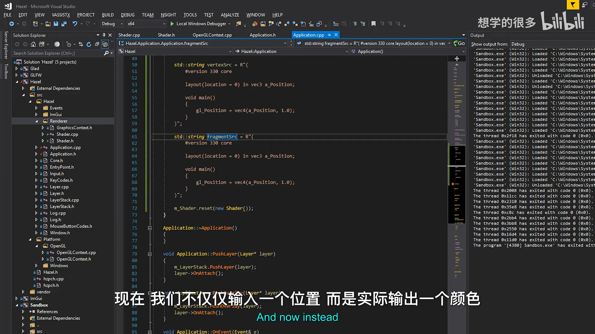
📷 第一对 Shader 分别处理顶点位置与输出颜色
回到原视频 (00:32:00)
12. 绘制红色三角形
(参考时间: 00:33:52)
程序运行后，之前没有 Shader 的白色三角形变为纯红色。
这说明：
- 两个 Shader 编译成功；
- Program 链接成功；
Bind()正确设置了当前 GPU Program；- Draw Call 使用了新的 Shader 输出。
graph TD
A[Vertex Shader] --> B[裁剪空间三角形]
B --> C[光栅化]
C --> D[Fragment Shader]
D --> E[红色像素]
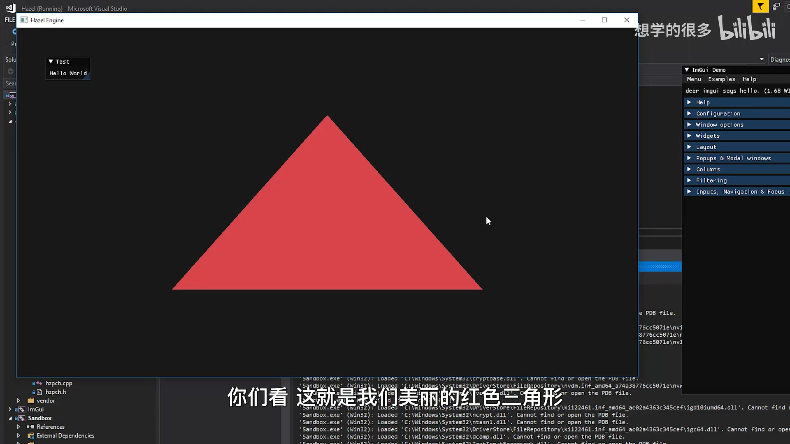
📷 第一个自定义 Shader 成功输出红色三角形
回到原视频 (00:33:57)
13. 在顶点 Shader 中平移三角形
(参考时间: 00:34:50)
修改：
gl_Position =
vec4(a_Position + 0.5, 1.0);
会把三个顶点整体向正 X、正 Y 平移，因此三角形移动到右上角。
这验证了顶点 Shader 的核心职责：把输入顶点转换成希望显示的裁剪空间位置。
// 原始位置
gl_Position = vec4(a_Position, 1.0);
// 平移
gl_Position = vec4(a_Position + 0.5, 1.0);
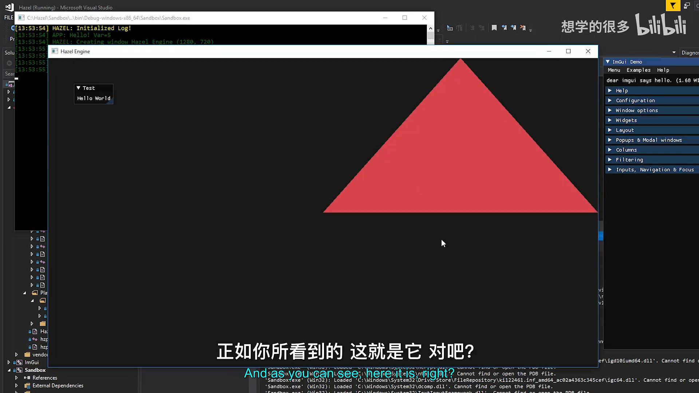
📷 顶点 Shader 平移顶点后三角形移动到屏幕右上角
回到原视频 (00:34:54)
14. Shader 之间的数据传递
(参考时间: 00:36:00)
顶点 Shader 可以输出可变变量：
out vec3 v_Position;
void main()
{
v_Position = a_Position;
gl_Position = vec4(a_Position, 1.0);
}
片元 Shader 使用相同名称接收：
in vec3 v_Position;
void main()
{
color = vec4(v_Position, 1.0);
}
变量名和类型必须对应。
sequenceDiagram
participant V as Vertex Shader
participant R as Rasterizer
participant F as Fragment Shader
V->>R: v_Position per vertex
R->>F: interpolated v_Position per fragment
F->>F: use v_Position as color
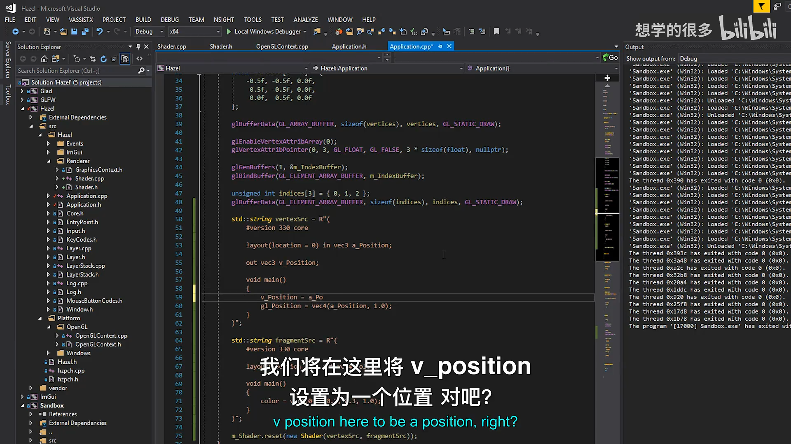
📷 通过同名的 out/in 变量把位置数据传递到片元 Shader
回到原视频 (00:36:00)
15. 为什么会出现黑色区域
(参考时间: 00:37:27)
顶点位置范围是：
-1 到 +1
颜色通道通常被限制在：
0 到 1
如果把负坐标直接作为颜色：
color = vec4(v_Position, 1.0);
负值会被截断为 0，表现为黑色。
转换到 0..1：
color = vec4(
v_Position * 0.5 + 0.5,
1.0);
映射关系：
-1.0 -> 0.0
0.0 -> 0.5
+1.0 -> 1.0
flowchart LR
A[-1.0] --> B[0.0]
C[0.0] --> D[0.5]
E[+1.0] --> F[1.0]
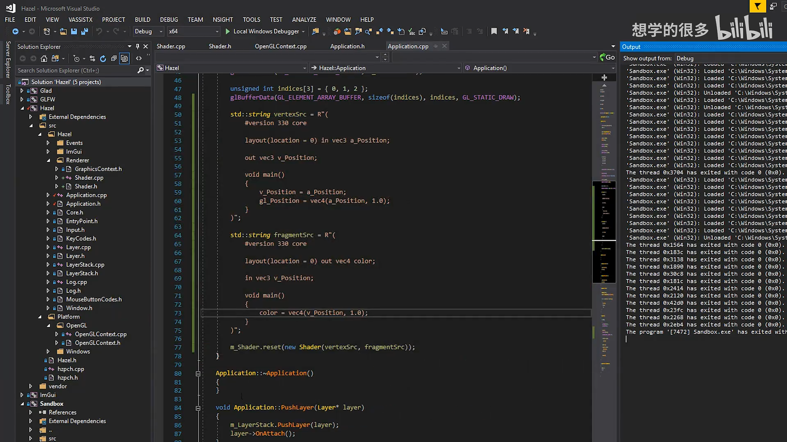
📷 通过乘以 0.5 再加 0.5，把位置范围映射到颜色范围
回到原视频 (00:37:27)
16. 颜色插值与坐标轴
(参考时间: 00:38:11)
顶点之间会进行线性插值：
左顶点: 负值
中 间: 接近 0
右顶点: 正值
所以最终颜色会在三角形内部平滑变化。
坐标轴与 RGB 对应：
| 坐标 | 颜色通道 |
|---|---|
| x | red |
| y | green |
| z | blue |
移动三角形或增加偏移后，可以看到红色与绿色分布变化。
graph TD
A[X 轴] --> B[Red]
C[Y 轴] --> D[Green]
E[Z 轴] --> F[Blue]
B --> G[Fragment 插值]
D --> G
F --> G
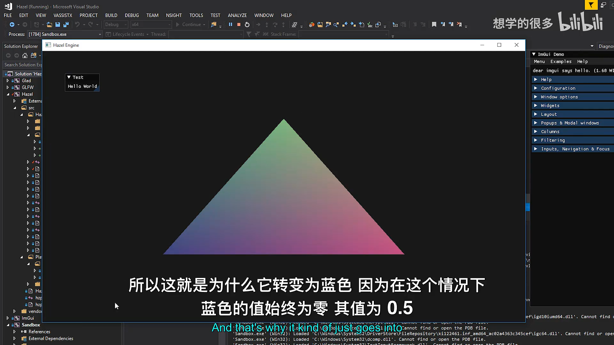
📷 颜色由顶点位置插值得到，形成平滑渐变三角形
回到原视频 (00:38:34)
17. Shader 生命周期与资源管理
当前 Shader 类已经处理：
- 顶点编译失败时删除顶点 Shader；
- 片元编译失败时删除两个 Shader；
- 链接失败时删除 Program 和两个 Shader；
- 链接成功后分离 Shader；
- 析构时删除 Program。
flowchart TD
A[Vertex compile] --> B{Fail?}
B -- 是 --> C[Delete vertex]
B -- 否 --> D[Fragment compile]
D --> E{Fail?}
E -- 是 --> F[Delete fragment + vertex]
E -- 否 --> G{Link}
G -- Fail --> H[Delete program + both shaders]
G -- Pass --> I[Detach + keep program]
I --> J[Destructor deletes program]
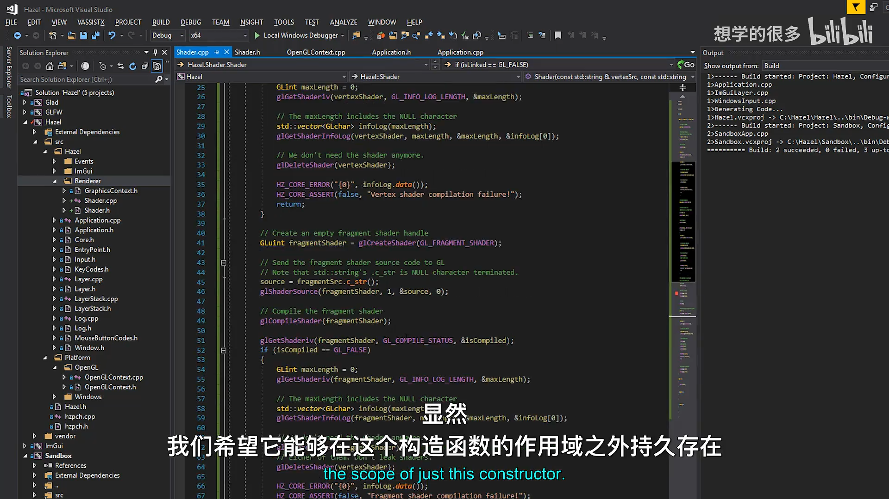
📷 Shader 类在编译、链接和析构阶段处理 OpenGL 资源
回到原视频 (00:26:30)
18. 当前技术债
(参考时间: 00:41:37)
虽然 Shader 类已经建立，但 Application 中仍然直接包含 OpenGL 代码：
glGenVertexArrays；glGenBuffers；glBufferData；glVertexAttribPointer；glDrawElements。
这意味着跨平台 Application 仍直接依赖 OpenGL。
下一阶段应把这些内容提取为：
Hazel/Renderer/VertexBuffer
Hazel/Renderer/IndexBuffer
Hazel/Renderer/VertexArray
Hazel/Renderer/Shader
Platform/OpenGL/OpenGLVertexBuffer
Platform/OpenGL/OpenGLIndexBuffer
Platform/OpenGL/OpenGLVertexArray
Renderer API 抽象的第一批实际类将从这里开始。
graph TD
A[Application] --> B[Renderer abstractions]
B --> C[VertexBuffer]
B --> D[IndexBuffer]
B --> E[VertexArray]
B --> F[Shader]
C --> G[OpenGL implementations]
D --> G
E --> G
F --> G
📷 下一步将把 Application 中的 GPU 资源操作提取为 API 专用类
回到原视频 (00:41:37)
19. 本节结论
本讲完成了 Hazel 的第一个 Shader 系统：
- 解释 Vertex Shader 与 Fragment Shader 的职责；
- 理解每个顶点与每个像素的执行模型；
- 建立 Shader 编译、链接与错误检查流程；
- 新增
Shader类； - 使用 Raw String 编写 GLSL；
- 在 Application 中临时创建和绑定 Shader；
- 成功绘制红色三角形；
- 验证顶点位置变换；
- 通过 Varying 数据实现颜色插值；
- 处理 Shader 资源的创建与释放；
- 明确下一步需要抽象 VertexBuffer、IndexBuffer、VertexArray 等 OpenGL 类。
Shader 让 Hazel 第一次真正使用 GPU 程序控制顶点与像素输出，也为后续材质、光照和 PBR 渲染奠定基础。